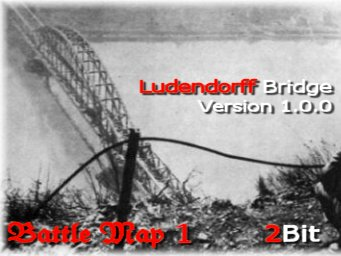
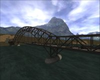
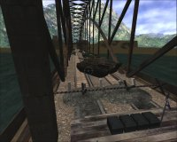
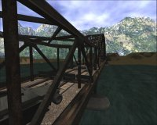
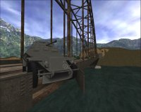
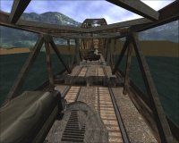

| This webpage has been
created to provide a description of the gameplay in Ludendorff Bridge
(the bridge at Remagen). There are enough novel
gameplay features that I thought it worth
explaining them here, so that readers will immediately know how to play
the map if they encounter it. Please
visit www.tibetclan.com
for details of TibeT servers that the map
may be playing on.
ET elements used in a non-standard way
are highlighted with this: 
|
| |
|  |
| The Allies wish to capture
the bridge intact to allow their armour to
cross the Rhine. The Axis must
destroy the bridge to prevent this, but
not so soon that their own troops cannot
retreat across it. The action takes
place mostly on the bridge, which has been
built to scale. |

Click for a larger image |
|
The
game only ends when the timer (20 mins) expires - no
sooner and no later.
|
|
| AXIS WIN: if at game
end, they have planted explosives on both
bridge supports.
|
| ALLIES WIN: if at
game end, there are no explosives planted
on the bridge supports.
|
|
If at game end there are
explosives planted on just one bridge
support, the winning team is
chosen
randomly. This is because
neither side knows whether one set
of explosives is enough to destroy the
bridge. It also ensures both teams
don't camp defensively - they need to get both
supports secure to ensure a victory.
|
|
| When explosives are planted
on a bridge support, a large flag is
erected on one of the Axis towers, and the
corresponding flag on the Allied tower is
taken down. Similarly the opposite
happens when the Allies defuse the
explosives. The game starts with one
set of explosives already planted.
|

Click for a larger image
|
|
|
| There are 3 spawn flags
along the bridge.
|
|
Your forces can only
spawn at the farthest flag in an unbroken
line of friendly-controlled
flags. For example, if your team
controls all 3 flags, you can spawn at any
of them, including the
farthest from your base. If the
enemy then takes the flag nearest to your base, the chain is broken and the
two flags further forward are cut off. You would then only be able to
spawn at your base.
|
|
|
Starting respawn times are 10 seconds for
each team.
|
|
When your team captures a flag, you may or may not be able to spawn
there (see above). However your respawn time increases by 5 seconds
for each flag captured. This represents the problems of supply lines,
and has the effect of aiding the defender who has been beaten back to his
starting point by making it progressively harder for the aggressive team, the
further they advance. When a team loses a flag, their respawn time
drops again by 5 seconds.
|
|
|
|
|
The
tank on the bridge can be damaged, repaired and driven by both teams.
If accompanied by Allies, it will advance West. If accompanied by
Axis, it will advance East. If players from both teams are near the
tank, it will stop.
|
|
The tank has a number of uses.
- It provides mobile fire support with its MG42.
- It provides mobile cover for advancing troops.
- When it is halted by a tank barrier near the ends of the bridge, it turns
sideways to give following troops maximum cover from enemy fire.
- It acts as a minesweeper to clear enemy mines from the gravel paths
alongside the railway tracks.
|
|
This is intended to be a brief, fierce battle on a long bridge, in which
teamwork will be vital for success. There is a lot of cover provided in
the shape of wrecked vehicles, sandbags, crates and improvised defensive
barriers built by engineers, all of which makes the snipers' job harder.
The constructed barriers can be destroyed by satchel charges. The crates
provide good cover but can eventually be destroyed by gunfire.
I hope you'll enjoy the map :)
|
|
|
Click for a larger image



|